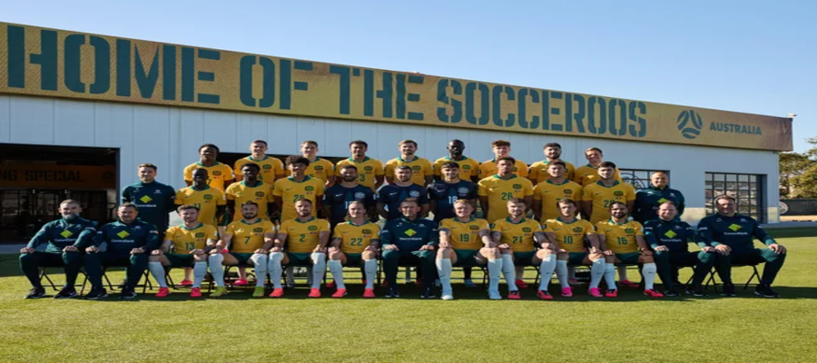

A seleção da Austrália, conhecida como os Australia men's national soccer team, disputou sua primeira partida internacional em 1922 contra a Nova Zelândia, após essa conquista durante anos não consseguiu ter resultados expressivos até que em 1974 consseguiu sua classificação para a Copa do mundo quando derrotou a própria Nova Zelândia, a seleção coleciona 5 títulos intercontinentais sendo 4 copas das nações da OFC e 1 Copa da Ásia e nenhuma copa do mundo.
Em 2001 a Austrália aplicou a maior goleada da história das seleções nacionais fazendo 31 a 0 em Samoa Americana, nessa partida o jogador Archie Thompson marcou 13 gols que na época foi um recorde em jogos internacionais.
A Seleção australiana tem uma grande e difícil história com jogos de classificação para as copas do mundo tendo que batalhar muito para garantir duas vagas no campeonato.
Em toda sua carreira desde o inicio atéo momento como seleção a australia fez inumeros feitos históricos e almejados por outras seleções.
O time conta com alguns grandes jogadores que deixaram suas marcas registradas na seleção australiana.